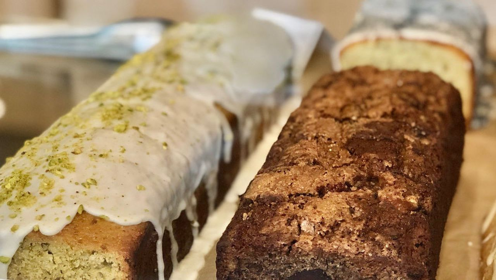
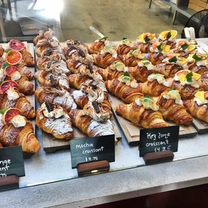

- Rise Bakery is all Gluten Free!! Click to see their menu.
- Hot out of the oven - Ochre Bakery So new they don't have a menu yet!.
- On your West Coast swing, check out Viva La Tarte . Very Tasty!
 DOUGHNUTS!!>
DOUGHNUTS!!>
Cakes on cakes on croissants!!>
